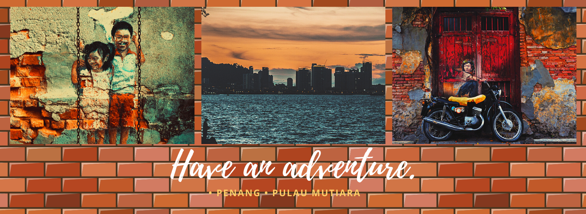

HOME
ABOUT US
PROMOTION
CONTACT US
Cuti-Cuti Malaysia
1 / 6
2 / 6

3/ 6
4 / 6
5 / 6
6 / 6
DARK MODE
×
Perlis
Kedah
Pulau Pinang
Perak
Selangor
Kuala Lumpur
Melaka
Negeri Sembilan
Johor
Pahang
Terengganu
Kelantan
Sabah
Sarawak
☰
PENINSULAR DOMESTIC TOURISM PERFORMANCE BEFORE AND AFTER COVID-19 PANDEMIC
Accomodation
Hotel
Motel
Chalet
Resort
Food & Beverages
Malay
Chinese
Indian
Transportation
E-Hailing
Car Rental
Worship
Mosque
Church
Temple
Chat
Chat
Message
Send
Close